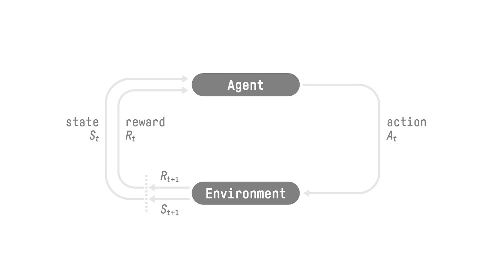

Deep Reinforcement Learning Course Notes (Hugging Face)
IT’S LITERALLY ALL FOR THE DAWGS LFG
(0.0.0) - THE BIG PICTURE AND RL LEARNING FRAMEWORK
The big idea behind reinforcement learning is that an agent will be able to learn from an environment by interacting with it, which will lead to rewards (which can be either negative (punishment) or positive) which serve as feedback after performing actions.
The example given in the course is the following: imagine you have a little brother, and you set him in front of a video game he’s never seen or played. He’ll probably start off by figuring his way around the controls. Maybe he somehow manages to collect some prize like a coin, he then realizes that doing so will increase his score. Now say he manages to run into an enemy, in touching the enemy he learns that doing so reduces his score. Through interaction, he learns about the environment.
(0.0.1) - RL PROCESS
The process described above can be modeled as follows:  Source: Hugging Face Deep RL Course - Unit 1 - “RL Framework”
We encounter a loop: An agent interacts with a given state (say, the world a specific moment in time / with a specific organization (set of information)), which is related to (or involves / or comes with) a reward1. The agent then takes a decision based on these, thereby changing the environment through it’s action, resulting in a new state and a new reward. This in turn ends up being a loop involving an agent, states (\( S_t \), \( S_{t+1} \), \( \dots \), \( S_n \)), actions (\( A_t \), \( A_{t+1} \), \( \dots \), \( A_n \)) and rewards (\( R_t \), \( R_{t+1} \), \( \dots \), \( R_n \)).
Reinforcement learning is based on the reward hypothesis:
“All of what we mean by goals and purposes can be well thought of as maximization of the expected value of the cumulative sum of a received scalar signal (reward)”
(Sutton, 2004; Sutton & Barto, 2018; Littman, 2017).
In other words, we can express the agent’s goal as a maximization problem, the maximization of its reward. This entails that we’d have to make sure our environment is set up / expressed in such a way that it’s able to capture this dynamic. For instance, consider we’re trying to teach our agent how to score a goal2. To do so, we’d have to make sure our agent has access to a set of actions that can allow it to satisfy such a goal (say, moving in a given direction, kicking, etc.), and that it receives information (a new state and a reward) based on the action it takes. Furthermore, this information is specified, such that, if the agent attempts to choose reward maximizing actions, it will lead closer to the completion of the goal (hopefully up to the full completion of the goal). Enough with the abstractions, let’s get back to our football example. In this case, since we want our agent to score a goal, we might reward it when the ball is closer to goal and punish it when its further away. In this sense, as our agent is trying to maximize the reward, it might try strategies (such as kicking the ball when its facing the goal) that result in the ball being as close to goal as possible (until it’s ultimately in goal).
(0.0.2) - MARKOV PROPERTY, MARKOV DECISION PROCESS
This RL process we’ve just discussed is called a Markov Decision Process (MDP)3. A MDP is a discrete time stochastic control process. Let’s unpack that:
Discrete-time: instead of thinking of time as continuous (say, the way in which an hour can be divided into minutes, and seconds, and each second can be divided into even smaller divisions, meaning, that between any two points in time there are infinitely more points in time), think of there being ‘separate points in time’, for example \( t = 1, 2, 3, \dots n \)where each value of t is a point in time. Time “jumps” from one to the next.
Stochastic: stochasticity (from the Greek (stokhos) which means to aim or guess) is commonly used interchangeably with ‘randomness’. The wiki page for stochasticity defines it as the ‘property of being well-described by a random probability distribution’. A probability distribution is a mathematical function that tells us the probability of occurrence of different outcomes of a given phenomenon / experiment / process.4 For example, imagine a fair dice
- interchanged with ‘randomness’. The wiki page for stochasticity says that it is ‘the property of being well-described by a random probability distribution’. A probability distribution is simply a mathematical function that tells us the probability of occurrence of different outcomes of a given phenomena / experiment. Now, just to avoid confusion, in case it’s needed,
- A random probability distribution
- Control:
- in a way that ultimately, there are no ‘jumps’ so to speak between units of time)
\[ S_{t+1} = f(S_t, A_t) \]
Here is an inline equation \( e^{i\pi} + 1 = 0 \)
Here is an inline equation \( e^{i\pi} + 1 = 0 \)
Here is an dosplay equation \[ e^{i\pi} + 1 = 0 \ \]
This is some shit that needs no converting you see like this $100 USD or maybe something like
$100 and $100
And now here is some latex:
\[e^{something} + 1\] \[100 \cdot 100 1\]And now some inline $t_0$
Hi There can be quite a bit of terminology to unpack
{kind=link}
I’l try and delve into this deeper myself
The RL process yes
{kind=link}

In the case where it’s the first interaction, the state \( S_0 \) would also have a reward, \( R_0 \), which tends to be 0. ↩
The course says it delves deeper into this later on, so we’ll see, however, I wish to do so myself as well, so for now we’ll have just a quick overview, and later on, depending on what the course covers, we’ll see what needs to be specified further. ↩
I promise to dive deeper into this elsewhere, so there should probably be a link here, if there isn’t, maybe I forgot to link it so it might be somewhere in
notes↩